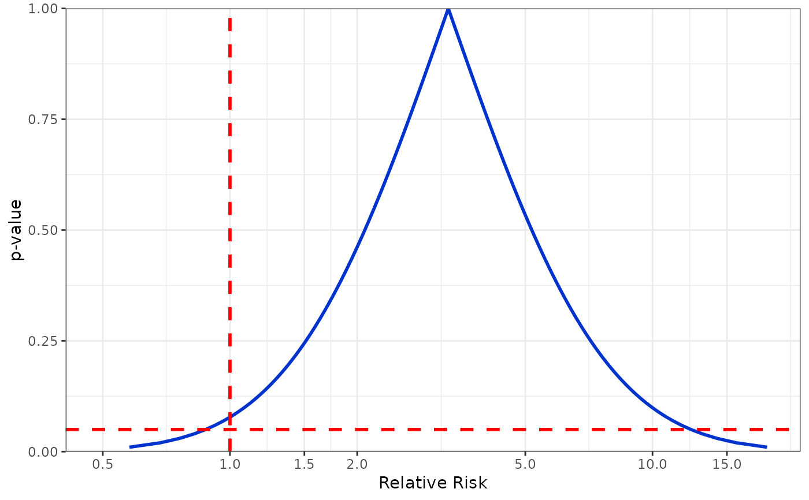
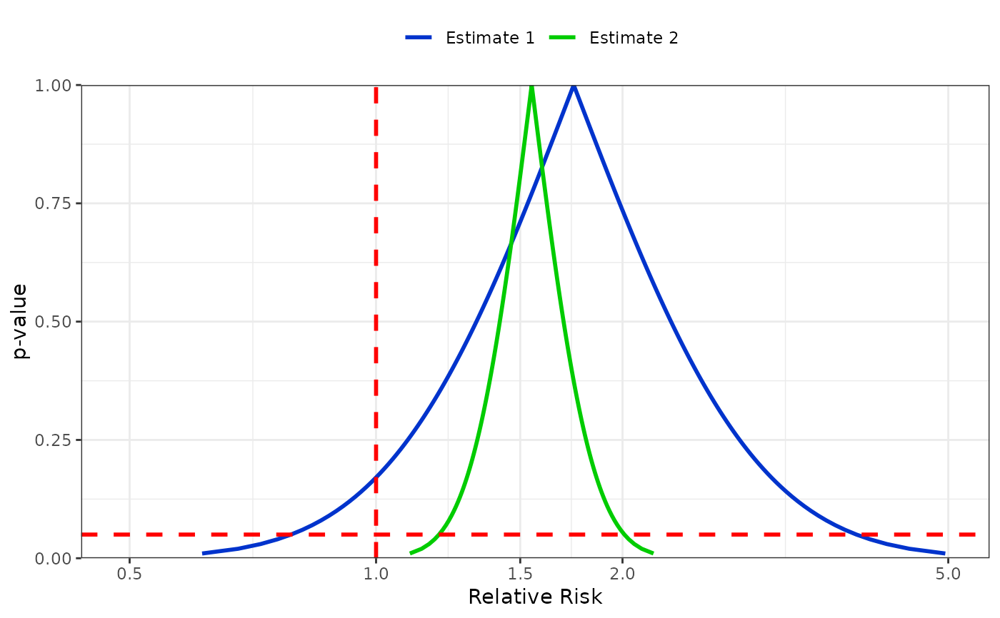

Plot the p-value function for one or two confidence interval pairs. See following for example of the use in the literature: Is flutamide effective in patients with bilateral orchiectomy? Rothman, Kenneth J et al. The Lancet , Volume 353 , Issue 9159 , 1184
pvalueplot(est1.ll, est1.ul, est2.ll = NA, est2.ul = NA,
label1 = "Estimate 1", label2 = "Estimate 2",
xlabel = "Relative Risk", citype = "95%CI", labelsize = NULL,
functionwidth = 1, referencewidth = 1)Lower confidence interval of estimate 1
Upper confidence interval of estimate 1
Lower confidence interval of estimate 2 (optional)
Upper confidence interval of estimate 2 (optional)
If using two estimates, name the 1st
If using two estimates, name the 2nd
The x axis label
Choose between '95%CI', '90%CI' or '99%CI'
Change size of labels
Change width of pvalue function line
Change width of reference lines
Code repo: https://github.com/epijim/episheet
pvalueplot(
est1.ll = 0.9,
est1.ul = 12,
xlabel = "Relative Risk"
)
#> Confidence interval type is 95%CI

pvalueplot(
est1.ll = 0.8,
est1.ul = 3.8,
est2.ll = 1.2,
est2.ul = 2,
label1 = "Estimate 1",
label2 = "Estimate 2",
xlabel = "Relative Risk",
citype = "95%CI"
)
#> Confidence interval type is 95%CI
